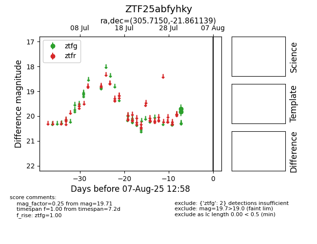

Target ZTF25abfyhky at 2025-08-07 16:21, see:
FINK: fink-portal.org/ZTF25abfyhky
Lasair: lasair-ztf.lsst.ac.uk/objects/ZTF25abfyhky
ALeRCE: alerce.online/object/ZTF25abfyhky
alt names
ZTF25abfyhky (ztf,fink)
coordinates:
equatorial (ra, dec) = (305.7150,-21.86114)
galactic (l, b) = (21.8813,-29.38074)
photometry
last ztfg=19.71
2 ztfg detections
